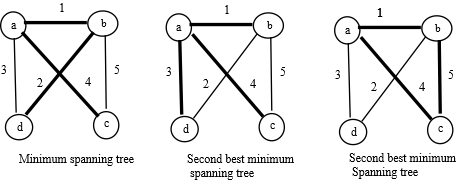
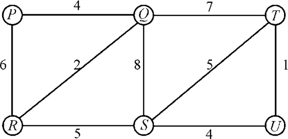
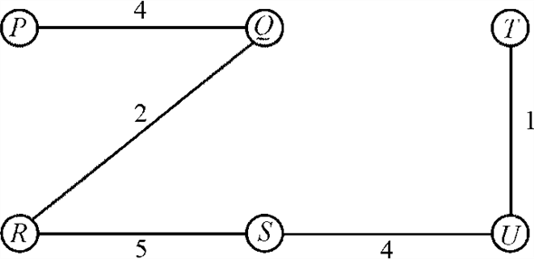
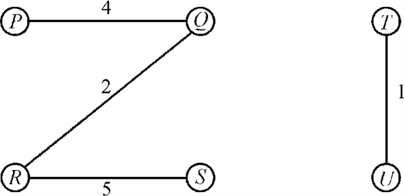

a.
To show that the minimum spanning tree is unique, but that the second spanning need not be unique do the following:
Consider the following graph having 4 vertices. Suppose the vertices are {a, b, c, d} and the edge weights are as follows:

The weight of the minimum spanning tree is 7 while there are two spanning trees having second minimum weight of 8.
b.
Let T be the minimum spanning tree of G. It is required to prove that G contains edges and such that is a second best minimum spanning tree of G.
Proof: Insert an edge by removing some other edge on the unique path between u and v. Such a replacement must increase the weight of the tree. If two or more edges are replaced, it will not produce a tree better than the second best minimum spanning tree.
c.
An algorithm that given T computes max [u, v] for all is as follows:
Use dynamic programming approach. Suppose it is required to find it for (u, v). First identify the vertex x that occurs immediately after u in the path from vertex u to v. Equate max [u, v] to max of w ((u, x)) and max [w, v].
Consider the case that u and v are adjacent. If x can be found in constant time, then the entire dynamic program will run in time.
d.
The second best minimum spanning tree can be computed using the idea of b) and c).
Compute max (u, v) for all vertices in T. Compute max (u, v) for all vertices in T. Compute for any edge (u, v) not in T the difference w (u, v)-max [u, v]. The two edges yielding the smallest positive difference must be replaced.
Minimum spanning tree in sparse graphs
Minimum spanning tree is the set of all vertices such that the resultant tree is connected and having minimum weight over all other spanning tree.
a)
Since, every minimal-incident edge belongs to any MST for a
vertex say , therefore
the edge that is returned by the call MST-REDUCE also called as
minimal edges are all cross the cut. Here, A is the minimum
spanning tree that has been formed by MST-Prim and in the union
operation with T (set of edges), all the edges of minimum
spanning tree are taken into consideration. So, this always leads
to formation of minimum spanning tree.
, therefore
the edge that is returned by the call MST-REDUCE also called as
minimal edges are all cross the cut. Here, A is the minimum
spanning tree that has been formed by MST-Prim and in the union
operation with T (set of edges), all the edges of minimum
spanning tree are taken into consideration. So, this always leads
to formation of minimum spanning tree.
Since PRIM-MST returns the safe edges. This leads to the completion of the tree to MST.
Therefore, the resultant tree defined by is a minimum spanning tree of graph G.
b)
A value has been entered in G’ if the node has more than one node that is making a minimum span of the tree. It is because if there were more ways by which the spanning of tree would have been done, it was taken into consideration.
Therefore, no of components that are stored in G’ are always less than.
That is
c)
MST-REDUCE can be implemented using the simple data structure such as UNION, MAKE_SET and FIND_SET. Running time of thus implemented algorithm will be
MAKE_SET
FIND_SET
UNION
if then
begin
end
Running time of(MST-REDUCE)=COST of for loop in line 1+COST of for loop in line 4+building + COST OF for loop in line 12+COST(constructing adjacency list for )
=
Since,
For connected graphs
Therefore,
Hence proved
d)
In above part it has been proved that MST-REDUCE running time is.
In the stage, suppose there are edges
Since,
And,
Therefore,
Running time of the  stages will
be
times
stages will
be
times
That is
e)
It can be picked up that.
Now, running time of Prim’s algorithm after stages-
Or,
=
=
Consider,
Differentiating and, the result is
Since,
The value will be minimum value when
Therefore, minimizes the total asymptotic running time.
f)
Prim’s algorithm with preprocessing has running time. On the other hand, Prim’s algorithm without preprocessing has running time.
Therefore, the former is better than latter.
Hence,
Till the time the above formula is satisfied, preprocessed Prim’s algorithm would win over the Prim’s algorithm without preprocessing.
Bottleneck spanning tree
For an undirected graph , a
bottleneck spanning tree is a spanning tree of
, a
bottleneck spanning tree is a spanning tree of  in such a
manner that the weight of largest edge is minimum when compared to
all spanning trees of.
in such a
manner that the weight of largest edge is minimum when compared to
all spanning trees of.
That is the maximum-weighted value edge in  is equal to
the value of the bottleneck spanning tree.
is equal to
the value of the bottleneck spanning tree.
a. Suppose that the graphhas a
minimum spanning tree which is not
a BST (Bottleneck Spanning Tree).
Consider the graph given below:

The minimum spanning tree of the graph given above will be:

Assume that the maximum weight edge in is.
Removing this edge will result in set of disconnected vertices
and that edge can be viewed as a cut of graph.
This can be given as:

Now since this edge forms a cut therefore each minimum spanning tree must contain that edge or an edge having weight less than that of.
This leads to the contradiction.
Hence we can say a bottleneck spanning tree is a MST (Minimum Spanning Tree).b. Consider that is a graph
and  is an
integer value.
is an
integer value.
A linear time algorithm is used to decide whether the value
provided by bottleneck spanning tree is at most.
1. remove all the edges from graph .
2. for each edge,
3. if (its weight)
add it to graph
end for
If the graph say constructed
in above fashion is connected then we can say that we can create a
spanning tree having no edges of weight more than.
Since we are checking for each edges of graph the above algorithm will take time.
c. Initialize with the
maximum weight edge of the graph.
Now,
Check
if b is possible (can be checked by above algorithm)
if yes
decrement value of b
else
b will be the maximum weight of the bottleneck minimum spanning tree
In this case, every value of b is checked until the condition is not satisfied. Since it is being checked for each edges of the graph the above algorithm will take time.